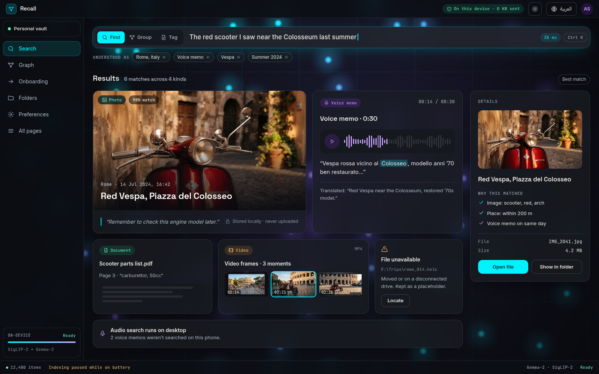
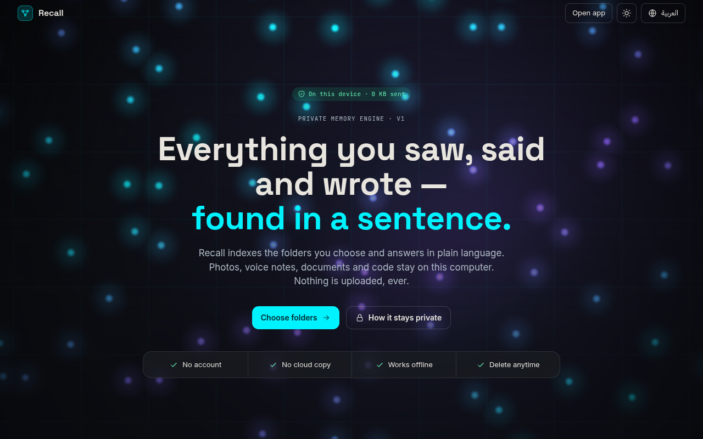
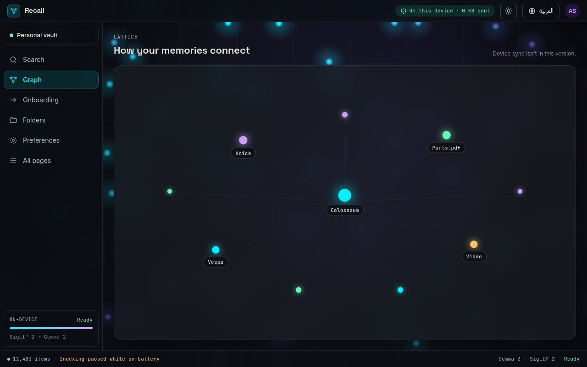
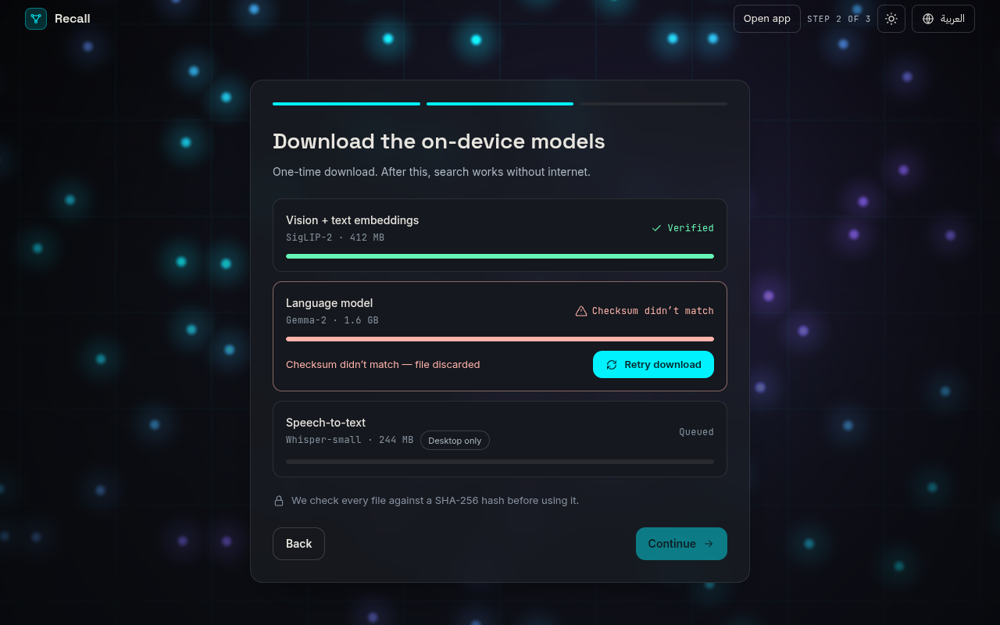
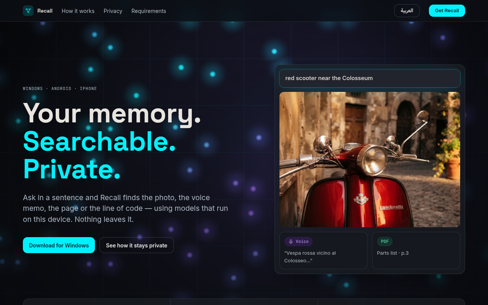
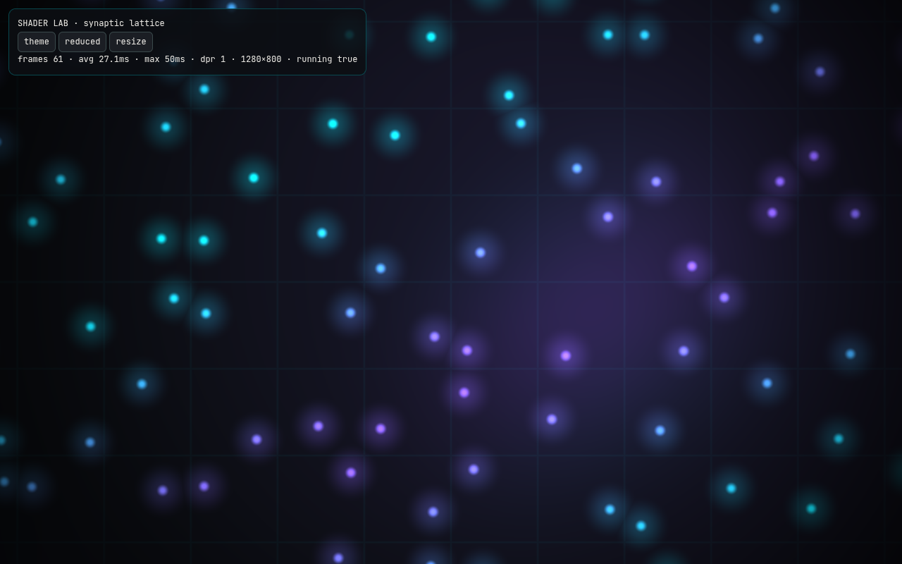

Recall prototype — pages
Double-click works: every page runs straight from disk (file://). Pick a page below. Inside the app, use the side rail (or bottom tabs on phone) to switch between Search, Graph and Onboarding.
The app

APPHome / SearchApp shell: header, rail, search bar with Find / Group / Tag, results, details panel.

APPOnboardingWelcome → choose folders → download models → ready.

APPGraph (Lattice)How memories connect. Secondary view.

APP · STATEModel download failedChecksum mismatch with Retry.
Not the app

MARKETING WEBSITELanding pagePublic website for Recall. Not part of the app.

DEV TOOLShader labBackground animation test bench.
Theme and language toggles are in each app page's header. Design rules: ..\Bible\RECALL_DESIGN_BIBLE.md